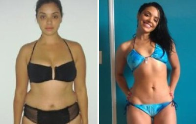
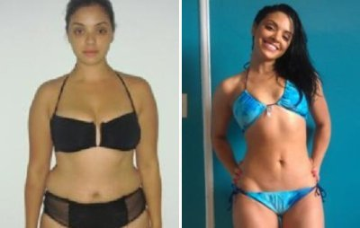

ब्रेकिंग: नैचुरल "तुरंत वजन घटाने की तकनीक" से भारत के डॉक्टर चकरा गए हैं - कानपुर के एक आदमी ने 30 दिन में 15 किलो घटाए!
भारत में क्रांति ला रही इस नई डाइट के बारे में विस्तार से बताने के लिए ही Health Blog ने यह रिपोर्ट तैयार की।
( कानपुर, भारत ) - आखिर कोई 15 दिन में 30 किलो कैसे कम कर सकता है, वो भी बिना किसी डाइट के या फिर अपनी डेली रूटीन में कोई भी बदलाव किए बगैर? आखिर ये कैसे हो सकता है? बस दिन में एक ऐसा ड्रिंक पीकर जो पूरी तरह से नैचुरल है?
पिछले तीन महीनों से हमारे पाठक एक ऐसे प्रोडक्ट को लेकर बड़े उत्साहित हो रहे हैं जो पुरुषों और महिलाओं दोनों का ही वजन तेजी से और आसानी से घटा देता है, वो भी बगैर डाइटिंग या एक्सर्साइज़ के। इस क्रांतिकारी तरीके को कई टीवी प्रोग्रामों में दिखाया जा चुका है और यह लगातार उपयोग करने के लिए सुरक्षित है।
अधिकतर डाइटों का पालन करना बड़ा कठिन होता हो। आपसे कहा जाता है कि आप अपने खाने की चीजों और समय में बड़े-बड़े बदलाव करें और यही कारण है कि वजन कम करना ज़्यादातर ऐसा लगता है मानो किसी ऊंचे पहाड़ की चढ़ाई करनी हो। स्पा और जिम वगैरह जो स्लिमिंग प्रोग्राम चलाते हैं उनकी कीमत 40,000-50,000 रु से कम नहीं होती, और इतना मंहगा होने के बाद भी रिज़ल्ट नहीं मिलता। ये आपके शरीर से सिर्फ पानी का वजन कम करे हैं और आप एक महीने के अंदर फिर से वजन चढ़ा लेते हैं।
कुछ लोग एक सीक्रेट तरीके को इस्तेमाल करते आए हैं लेकिन साथ ही लोग इस सीक्रेट को किसी भी कीमत पर एक राज़ ही रखना चाहते हैं। यही कारण है कि आप कितनी भी कोशिश कर लें लेकिन दुबले होने की सही विधि आप तक पहुँच ही नहीं पा रही है। हम आपको बताएँगे, ऐसा क्यों है और आखिर क्यों डॉक्टर आप तक यह तरीका पहुँचने ही नहीं देना चाहते। यदि आप इस सिस्टम को ठीक तरह से इस्तेमाल करेंगे तो आपको ऐसे रिजल्ट्स मिलेंगे जिनको देख कर आप चकरा जाएंगे। आपके कोई दोस्त-भाई यह मानने को तैयारही नहीं होंगे कि ये कितना आसान था।


 
 मोटे लोगों के बारे में कई तरह की मिथ्याएँ समाज में फैली हुई हैं। कोई भी मोटे आदमी से शादी नहीं करना चाहता और मोटे लोगों को अधिकतर अपना जीवनसाथी ढूँढने में भी परेशानी होती है। ज़्यादातर कंपनियाँ मान कर चाहती हैं कि मोटे लोग पतलों की तुलना में आलसी और ढ़ीले होते हैं। मोटे लोग अधिकतर आत्म-विश्वास की कमी और खराब सेहत से झूझते रहते हैं। वैज्ञानिक रूप से भी मोटापे को कई बीमारियों का सीधा कारण और उम्र में कमी के लिए जिम्मेदार प्रमाणित तथ्य है। अमेरिका में तो मोटापा इस हद तक बढ़ गया था कि इसे एक तरह से राष्ट्रीय इमरजेंसी घोषित कर दिया गया था। अमेरिकी सरकार ने 8 साल तक कड़ी रिसर्च कारवाई और इस समस्या का हल ढूँढने में करोड़ों डॉलर खर्च कर दिये - और जानते हैं क्या है वो जादुई प्रॉडक्ट जो वे खोज पाए? इसके काम करने का तरीका जानने के लिए आगे पढ़ें।
आखिर आप पतले क्यों नहीं हो रहे:
सबसे कठिन होता है, पेट, नितंबों और कमर की चर्बी घटाना। आप जितनी मर्जी कोशिश कर लें, एंटीऑक्सीडेंट के बिना आप कभी भी चर्बी से निजात नहीं पा सकते। बदकिस्मती से यदि आप एक आम आदमी हैं तो इसकी संभावना कम ही है कि आपकी डाइट में एंटीऑक्सीडेंट होंगे। अपनी डाइट में सही मात्रा में एंटीऑक्सीडेंट शामिल करना और तेजी से चर्बी घटाने का एक ही रास्ता है और वो है ये प्रोडक्ट जिसके बारे में हम आपको यहाँ बताने जा रहे हैं।
बॉलीवुड के प्रसिद्ध सिने-सितारे इस शानदार प्रोडक्ट को इस्तेमाल करके बहुत चर्बी घटा लेते हैं। यह न सिर्फ किफ़ायती है बल्कि 100% ऑर्गैनिक भी है। कई बार कई बहादुर पत्रकार बॉलीवुड सितारों की अमेरिका में छुप-छुप कर यह प्रोडक्ट खरीदते हुए फोटो खींच लेते हैं और वो किसी पत्रिका में छप जाती है। यह एकमात्र वजन घटाने का प्रोडक्ट है जो आपको तुरंत रिज़ल्ट देता है।
वजन घटाने का यह तेजी से उभरता और शक्तिशाली तरीका मार्केट में उथल-पुथल मचा रहा है। इसके साथ न जिम जाने की जरूरत पड़ती है और न खान-पान में कोई बदलाव करना पड़ता है। और सबसे बड़ी बात, इससे आपकी जेब भी ज़्यादा हल्की नहीं होगी .
आखिर Green Coffee में ऐसी
क्या खास बात है?
लॉस एंजिल्स में स्थित अमेरिका के प्रसिद्ध हैल्थ रिसर्च इंस्टीट्यूट UCLA के द्वारा किए गए शोधों के मुताबिक- जब Green Coffee नियमित रूप से ली जाती है तो हमारा मैटाबॉलिज़्म इतना तेज हो जाता है कि हमारे शरीर की चर्बी जलाने की आंतरिक क्षमता 318% तक बढ़ जाता है। Green Coffee Formula से 95% शुद्ध सत्त आपके शरीर में पहुंचता है। पूरी तरह से नैचुरल विटामिनों का ऑर्गैनिक मिश्रण आपके शरीर के वजन को छू-मंतर कर देगा और आपके पूरे शरीर को भी सेहतमंद बनाएगा।
विश्वास नहीं होता न? ऐसा करने वाले आप अकेले नहीं हैं। जब हमें वजन कम करने के इस प्रोडक्ट के बारे में पहली बार पता चला तो हमने भी तुरंत यही सोचा कि ये एक और डाइट की तिकड़म आ गई। लेकिन जब हमने Green Coffee Natural Power Cleanse इस्तेमाल करने वाले सैंकड़ों लोगों की सफलता की कहानियाँ सुनीं तो हमें सोचना ही पड़ा। यह ऐसा भी था क्योंकि Green Coffee वास्तव में कोई डाइट है ही नहीं। इनमें से किसी भी आदमी को अपनी लाइफस्टाइल बिल्कुल भी बदलनी नहीं पड़ी थी। ये लोग तो अभी भी अपनी मनपसंद चीजें खाते जा रहे थे...और अपना वजन घटाते भी चले जा रहे थे!

अहमदाबाद से हमारी पाठिका अंजलि जी ने 6 हफ्तों में 20 किलो कम होने की खबर दी और वो सिर्फ Green Coffee डाइट ही ले रही थीं।
"मुझे तो विश्वास ही नहीं हो रहा ये सब कितना आसानी से हो गया था। मैंने न अपनी डाइट बदली और न ही अपनी डेली रूटीन लेकिन फिर भी चर्बी ऐसे पिघल गई जैसे मक्खन। मुझे तो ये चीज बेहद अच्छी लगी! आखिरकार एक ऐसा प्रोडक्ट आ ही गया जो असर करता है।"
आखिर Green Coffee काम कैसे
करती है?
Green Coffee के इस पेटेंटेड मिक्सचर में दो ऐसे पदार्थ शामिल हैं जो एक साथ मिलकर आपको बड़ी तेजी से दुबला करते हैं।
क्लोरोजेनिक एसिड लिवर में फैटी एसिड्स की प्रोसेसिंग को एक्टिवेट और बेहतर करता है और आंतों में वसा के तोड़ने की क्रिया को उत्प्रेरित करता है जिससे वसा का खून में सोखा जाना कम हो जाता है।
कैफ़ीन एक शक्तिशाली नैचुरल एंटी-ऑक्सीडेंट है। यह स्किन की खून की धमनियों की दीवारों को मजबूत करता है और स्किन के पुनर्निर्माण की प्रोसेस को तेज करके हमारे शरीर की फ्री रैडिकल्स से लड़ने में मदद करता है।
असर में भारत सरकार यह चाहती ही नहीं कि आप इन गुप्त पदार्थों के बारे में जानें। लेकिन हम नहीं मानते कि आपसे दुनिया के #1 वजन घटाने के सीक्रेट को छुपाना न्याय है।
यह क्लीनिकली प्रमाणित है कि Green Coffee:
- सिर्फ डाइट और एक्सर्साइज़ की तुलना में 4 गुना ज़्यादा वजन कम करती है
- ऊर्जा बढ़ा देती है
- में एंटीओक्सीडेंट्स प्रचुर मात्रा में पाए जाते हैं -इस मामले में इसके सामने न ब्लूबेरी कहीं लगती है और न गोजी बेरी!
- इसे हृदय और पाचनतंत्र अच्छा बनता है
- हमारे शरीर से उन जहरीले पदार्थों को बहा कर बाहर कर देती है जो कई सालों से हमारे शरीर में जम गए हैं
- आपके पाचनतंत्र से खतरनाक परजीवियों को नष्ट कर देती है
- पेट के अंदर की दीवारों से 'कीचड़' बाहर निकाल फेंकती है (जिससे चर्बी जलने में मुश्किल होती है!)
- गैस और पेट फूलने में आराम देती है
- आपके मैटाबॉलिज़्म को नियंत्रित करती है
- ऊर्जा, कामेच्छा और चेतना बढ़ाती है
"उसने मुझे अपने साथ Green Coffee ट्राय करने के लिए मुझे इतना फोर्स किया लेकिन इसके लिए मैं उसको थैंक्स ही कहूँगी। दोनों ने मिलकर 30 किलो कम कर लिया है और अभी दुबला होना जारी है!" - सलमान और असमा
हम खुद भी यह जानना चाहते थे की क्या या प्रोडक्ट वो सब वाकई में करता था जिसके ये दावे करता था। सफलता की अधिकतर कहानियों में अधिक से अधिक वजन कम हो जाने की बात ही सुनने में आती है। Green Coffee वजन कम करती है और ऊर्जा का स्तर बढ़ाकर आपके शरीर से जहरीले पदार्थ बहार निकाल देती है जिससे आपका शरीर ज़्यादा असरदार तरीके से कैलोरी जला पाता है।
यह प्रोडक्ट 100% संतुष्टि की गारंटी के साथ आता है।
यहाँ जाने कि आपको प्रोडक्ट कैसे लेना है ताकि सबसे उचित तरीके से दुबला हुआ जा सके:
- दिन में एक बार इसे उबाल कर ड्रिंक बनाएँ और खाने के 30 मिनट पहले लें
- जो मर्जी हो वो खाएँ
- तब तक दोहराते रहें जब तक आपको आपने मन के मुताबिक पतला शरीर नहीं मिल जाता!
हममे से कुछ तो अभी भी भरोसा करने को तैयार नहीं थे...और फिर हमारी रिपोर्टर ने खुद ट्राय किया।
Health Blog की रिपोर्टर नेहा ने इस डाइट के ट्रायल के लिए खुद ही ऑफर दिया क्योंकि उसकी शादी होने वाली थी। वो शादी से पहले किसी भी तरह 10 किलो कम करना चाहती थी। Green Coffee डाइट ट्राय करने के लिए उसने प्रोडक्ट ऑनलाइन ऑर्डर किया। उसने Green Coffee इसलिए चुनी क्योंकि वो लॉस एंजिल्स, अमेरिका की जीएनपी लैब में क्लीनिकली टेस्ट की हुई है - ये वो संस्था है जो वजन नियंत्रित रखने के प्रोडक्टस के लिए कड़े नियम बनाती है।
Green Coffee की बॉटल ऑर्डर करने के कुछ ही दिनो बाद आ गई।
नेहा के अविश्वशनीय बदलाव को खुद देखें...
मेरे नतीजे - मैंने सिर्फ 1 महीने में 12.2 किलो घटा लिए और मेरे कपड़ों की 2 साइज़ कम हो गईं। मैं तो बस रो पड़ी थी!

पहला हफ्ता:
इस प्रोडक्ट के साथ डाइट पर रहने के पहले हफ्ते के बाद ही मैं इसके जबर्दस्त रिजल्ट्स देख कर अचंभे में पड़ गई थी। मेरी ऊर्जा का स्तर बढ़ गया था, और मैं उतनी भूखी भी नहीं रहती थी। Green Coffee लेने का एक फायदेमंद साइड-इफेक्ट था इसकी भूख को कंट्रोल करने की शक्ति।
वास्तव में बताऊँ तो मुझे इतना बढ़िया लगा जैसा कई सालों से नहीं महसूस हुआ था!
और सबसे बड़ी बात, मैंने इसके लिए अपनी डेली रूटीन में कुछ भी बदलाव नहीं किया। 7 वें दिन मैं वजन नापने की मशीन पर चढ़ी और मुझे तो अपनी आँखों पर भरोसा ही नहीं हुआ। मैंने 3.3 किलो कम कर लिए थे। लेकिन मैं अभी भी पूरी तरह भरोसा नहीं कर पा रही थी क्योंकि कई लोग ऐसा कहते हैं कि शुरू-शुरू में शरीर से पानी बाहर निकल जाने के कारण वजन कम हो जाता है। मैं इंतज़ार करके आने वाले हफ्तों में रिजल्ट्स देखना चाह रही थी और रिजल्ट्स बड़े अच्छे आ रहे थे! अब मैं कई सालों में पहली बार 67 किलो के नीचे आ पाई थी!
दूसरा हफ्ता:
सपलीमेंट्स इस्तेमाल करने के दो हफ्तों बाद मेरा एनर्जी लेवल काफी बढ़ गया और मेरी नींद भी पहले से काफी अच्छी हो गई थी। अब मैं हमेशा की तरह बीच रात में उठ कर करवटें नहीं मारती थी क्योंकि मेरा शरीर अब वाकई में आराम महसूस कर रहा था (मेरा मानना है ये इस कारण से था क्योंकि मेरे शरीर से जहर बाहर निकाल गया था)। और इसके साथ ही मैंने 2.9 किलो और कम कर लिए, जिससे मेरा कुल 6.8 किलो वजन हो गया, वो भी सिर्फ 2 हफ्तों में।
अब मैंने ये मानना शुरू कर दिया था कि ये डाइट कोई शो बाजी नहीं बल्कि एक सीरियस प्रोडक्ट है।
तीसरा हफ्ता:
3 हफ्तों के बाद तो मेरे सारे शक दूर हो गए! अब 3.1 किलो कम करने के बाद मेरे पूरे 2 साइज़ कम हो गए हैं और मैं एनर्जी से भरी रहती हूँ। कई बार, डाइट करने के तीसरे हफ्ते में लोग थक कर छोड़ देते हैं। लेकिन Green Coffee डाइट से मेरा एनर्जी लेवल कभी कम नहीं हुआ, बल्कि वो दिन भर एक जैसा ही बना रहता था। मुझे अब दिन में 3 बजे झपकी लेने की जरूरत नहीं पड़ती थी और मैंने यह भी पाया कि मेरा पेट खाने को बेहतर तरीके से पचा पा रहा था। खाने के बाद न पेट फूलने की प्रोब्लम और न गैस वगैरह भी ठीक हो गए थे।
चौथा हफ्ता:
चौथे हफ्ते के बाद मेरे फ़ाइनल रिज़ल्ट चौंका देने वाले थे। मैंने Green Coffee डाइट शुरू करने के बाद पूरे 12.2 किलो कम कर लिए थे! वास्तव में Health Blog में काम करने वाला हर कोई अब पछता रहा था कि उसने इस ट्रायल में हिसा क्यों नहीं लिया। चौथे हफ्ते में Green Coffee इस्तेमाल करने के बाद, मेरा 3 किलो वजन और कम हो गया और इसके रिजल्ट्स लगातार आते रहे थे! लेकिन ईमानदारी से बताऊँ तो मेरे पास अब कम करने के लिए और वजन था ही नहीं। मैं इसके बाद भी Green Coffee लेना चालू रखूंगी क्योंकि इसमें इतने ज़्यादा विटामिन और एंटीऑक्सीडेंट्स हैं कि इससे मेरी स्किन में बहुत फायदा हो रहा है।
यदि आपको इस डाइट के असर पर भरोसा नहीं है तो आपको इसे खुद ही ट्राय करके देखना चाहिए। हमारे खुद के टेस्ट के मुताबिक तो इसके रिजल्ट्स असली हैं।
Health Blog में हम हर साल 200 से भी ज़्यादा डाइटों का परीक्षण करते हैं और शुरू-शुरू में तो हमें खुद भी भरोसा नहीं हो रहा था लेकिन हम बड़ी जल्दी ही इसके भक्त हो गए। अपना खुद का शोध करने के बाद हमें यह देखकर बड़ी खुशी होती है कि लोग इस डाइट से वाकई में फायदा पा रहे हैं।
हमारे सभी पाठकों के लिए 50% स्पेशल डिस्काउंट
-
50%
डिस्काउंट पर Green Coffee
ऑर्डर करने के लिए यहाँ क्लिक करें
- 100% नैचुरल, ऑर्गैनिक
- पूरी तरह से नैचुरल भूख दबाने वाली
अपना डिस्काउंट पाने
के लिए हमारी एक्सक्लूसिव प्रोमो लिंक पर जाएँ
दोस्तों, सच तो यह है कि आज के दिन मार्केट में सैंकड़ों ऐसे प्रोडक्ट हैं जो वजन घटाने के क्षेत्र में क्रांति लाने का दावा करते हैं लेकिन Green Coffee की प्रभावशीलता और सुरक्षा 100% वैज्ञानिक रूप से प्रमाणित है।
स्टॉक सीमित है। डिस्काउंट अभी भी उपलब्ध है यहाँ 16.04.2019
क्या आप अगले हफ्ते के लिए कोई कंस्यूमर टिप शेयर करना चाहेंगे? यदि हाँ, तो कृपया हमें एक ईमेल भेजें।
कमेंट्स:
ये बड़ी जबर्दस्त डील है। मेरी मम्मी ने भी ये मंगाई थे लेकिन उन्हें कोई डिस्काउंट नहीं मिला और वे 10 किलो कम कर पाईं। मैं भी इसे ले रही हूँ।
मेरी बहन ने इसे ट्राय किया और अब उसका फिगर कितना बढ़िया हो गया, मुझे तो उससे जलन जैसी होती है। मैं इस ऑफर को पाकर बड़ी खुश हूँ - मैं तो ऑर्डर कर रही हूँ।
मैंने बॉटल ऑर्डर कीं और 3 दिन के अंदर वो आ गईं। मैं वापस रिपोर्ट करता हूँ क्या हुआ (मैंने इसे अपने एक दोस्त की सलाह पर खरीदा था जो इसी को इस्तेमाल करके पूरा फिट हो गया।)
मैं कितने दिनों से दुबले होने की सोच रहा हूँ लेकिन टालता जा रहा हूँ लेकिन अब मुझे शुरू करना ही होगा। मुझे मोटे रहे अब बहुत दिन हो गए है!! :(
अरे यार! मैं ऑर्डर करने गई और इनका प्रोडक्ट खत्म ही हो गया! ऐसा किसी और के साथ भी हुआ क्या?
मैं स्कूल में अपनी क्लास की 'टुनटुन' थी। मैंने इसे 4 महीने तक इस्तेमाल किया है और 40 किलो से भी ज़्यादा घटा लिया है। ये चीज जबर्दस्त है दोस्तों!!!
यह लेख वास्तविकता दिखाता है। मैंने इसे खुद इस्तेमाल किया है और पिछले साल लगभग 15 किलो कम करने के बाद वजन बढ़ाया नहीं है।
मैंने इस प्रोडक्ट को इतना सस्ता कभी नहीं देखा। अब ये लोग फ्री डेलीवरी भी दे रहे हैं? बस अभी देखा।
मैं ऐसे 10 लोगों को जानता हूँ जिन्होने इसको इस्तेमाल करके अपना वजन कम कर लिया है। ये रेट जबर्दस्त है - मैं तो ले रहा हूँ भई।